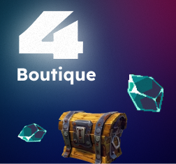
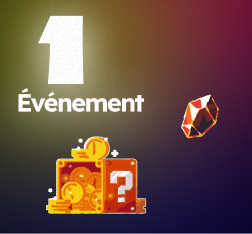
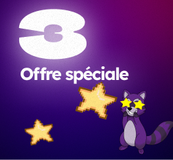
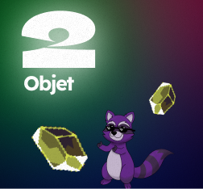
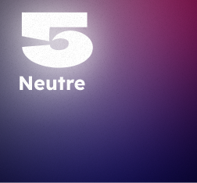

Pour les animateurs
Guide pas à pas pour animer l'atelier
Facilitation
Guide de l'animateur
Bienvenue dans le guide d'animation de l'atelier ERA. Ce document complet vous explique comment préparer le matériel, comment mener la partie en incarnant les biais du jeu, et comment animer le débriefing pédagogique.
1. Avant la partie : La Préparation
La réussite de l'atelier repose sur un matériel bien préparé et une bonne répartition des rôles. Suivez ces étapes pour que tout soit prêt à l'arrivée des participants.
Matériel physique à préparer
- Le plateau de jeu : Téléchargez et imprimez le plateau en format A3 (composé de 4 feuilles A3). Celles-ci comportent des repères d'impression permettant de les découper proprement. Dans l'idéal, il est recommandé de coller les 4 parties découpées du plateau sur une planche en bois de 50 × 50 cm pour un rendu stable et professionnel.
- La banque et les billets : Le PDF des billets ERA est prévu pour être imprimé en recto-verso. Il contient un montant total de 300 € (50 € par joueur pour 5 joueurs maximum, et 50 € supplémentaires pour alimenter la banque centrale). Découpez-les soigneusement.
- Attribution initiale des billets : Avant que les joueurs ne s'installent, préparez pour chaque joueur une enveloppe contenant exactement 50 € répartis ainsi :
- 1 billet de 20 €
- 2 billets de 10 €
- 1 billet de 5 €
- 5 billets de 1 €
- Pions et Cartes de crédit : Utilisez les fichiers d'impression 3D fournis dans le kit pour imprimer les pions totems et les cartes bancaires fictives. Si vous ne disposez pas d'imprimante 3D, vous pouvez utiliser des pions de jeux de société classiques et imprimer les cartes bancaires sur du papier cartonné épais.
Option NFC Immersive
Pour pousser l'expérience de paiement sans contact au maximum, vous pouvez coller des puces NFC adhésives au dos des cartes bancaires imprimées en 3D. En utilisant les applications mobiles gratuites NFC Tools sur iOS ou Android, vous pouvez scanner la carte pour simuler un débit immédiat. Si vous n'avez pas ce matériel, jouez simplement l'effet à l'oral !
Télécharger NFC Tools sur iOS | Télécharger NFC Tools sur Android
Double Encadrement : L'Animateur et le Banquier
Pour qu'une partie se déroule dans de bonnes conditions pédagogiques (limite de 2 à 5 joueurs maximum par plateau), il est nécessaire de mobiliser deux maîtres du jeu :
- L'Animateur : Il incarne l'éditeur de jeu vidéo. Son unique but est d'être très présent, de pousser au marketing agressif et d'inciter les participants à consommer. Pour garder toute sa crédibilité et sa force de persuasion, l'animateur ne peut pas tenir le rôle de banquier.
- Le Banquier : Il gère les flux financiers. C'est lui qui encaisse les espèces des joueurs physiques, rend la monnaie et simule les paiements par carte bancaire.
Composition des groupes
Une partie de jeu rassemble entre 2 et 5 joueurs. Pour mettre en évidence l'impact du mode de paiement, vous devez répartir les participants à part égale (moitié-moitié) entre les deux modes de paiement au sein d'une même partie :
- La moitié des participants règle exclusivement avec de l'argent liquide (friction maximale : ils doivent donner physiquement leurs billets au banquier).
- L'autre moitié des participants dispose d'une carte bancaire fictive (friction nulle : le paiement est débité d'un simple geste).
Configuration de l'ordinateur & Rôle du meneur
La configuration en mode kiosque (ou le contrôle direct du site par les joueurs) est intéressante si l'on souhaite confier la souris aux participants pour plus d'immersion.
Toutefois, pour éviter tout risque de fausse manipulation ou de perte de temps, l'animateur peut parfaitement jouer le rôle de meneur de jeu : c'est lui qui contrôle alors l'ordinateur principal, lance les dés et navigue sur le site web selon les directives des participants.
Configuration du PC
Utilisez un PC dédié à l'atelier ou créez un compte utilisateur séparé sur votre ordinateur pour ne pas être sur votre session personnelle. Cela évite toute interruption et garantit une expérience fluide.
2. Pendant la partie : L'Animation active
La partie commence lorsque les joueurs ont saisi leurs pseudos et sélectionné leur totem sur l'application web. C'est maintenant que votre rôle d'animateur devient crucial.
Rôleplay de l'Animateur : Soyez le Dark Pattern
Durant toute la partie, vous êtes le représentant de l'éditeur de jeu. Votre but est d'inciter les joueurs à dépenser leur argent. Utilisez le marketing agressif, créez une fausse urgence et encouragez la jalousie sociale entre les participants.
"Allez, ce boost n'est qu'à 5€ ! C'est donné !", "Tu es sûr de vouloir laisser ton camarade te dépasser ?", "Attention, cette offre se termine à la fin de ton tour !", "Acheter cet objet, c'est s'assurer la victoire !"
Le Déroulement d'un Tour
À chaque tour, l'application web indique le nom du joueur actif. Le joueur peut effectuer les actions suivantes dans l'ordre :
- Activer un objet : S'il possède un consommable dans son inventaire, il peut choisir de l'activer avant de lancer les dés pour modifier son mouvement ou bloquer un adversaire.
- Lancer les dés : Cliquer sur le bouton. L'application calcule le déplacement et applique automatiquement les effets de la case d'arrivée.
- Résolution de la case : Le joueur applique l'événement indiqué à l'écran (achat en boutique, tirage de carte, roulette d'objets, etc.) en collaboration avec le Banquier pour le débit d'argent.
Les Types de Cases sur le Plateau

Boutique
Propose 3 objets aléatoires. Le joueur peut en acheter un, ne rien acheter, ou payer pour changer les objets affichés (reroll).

Événement
Déclenche un effet global qui affecte tous les participants simultanément (taxes collectives, dons forcés, vols ou échanges d'objets).

Offre Spéciale
Le joueur peut choisir de tirer une carte payante mystère. Selon un lancer de dé, l'effet peut grandement booster sa progression ou se retourner contre lui.

Récompense Quotidienne
Une roulette se lance automatiquement à l'écran et offre un objet gratuitement au joueur.

Neutre
Rien ne se passe, le tour se termine sans action financière.
Boutique des Objets — Référence Rapide
Voici la liste officielle des objets de la boutique avec leur coût, leur description et leur utilité tactique pour vous aider à guider les joueurs :
🚀 Boost
5 €Ajoute automatiquement +4 cases au résultat du prochain lancer de dés.
Déplacement⚡ Turbo
8 €Avance immédiatement de 8 cases. Saute les effets de la case d'arrivée.
Déplacement❄️ Freeze
10 €Force le joueur adverse ciblé à passer son prochain tour de jeu.
Obstacle🔀 Swap
16 €Échange votre position physique sur le plateau avec celle du joueur ciblé.
Obstacle🌪️ Tornade
8 €Fait reculer un joueur adverse de 6 cases. L'effet de sa case d'arrivée s'applique.
Obstacle🌀 Téléporteur
20 €Lance un dé. 1-2 : recule de 3 cases. 3-5 : avance de 5. 6 : avance de 8.
Aléatoire🎲 Dé Supp
25 €Ajoute définitivement un second dé à tous vos lancers pour le reste de la partie.
Permanent📜 Contrat
25 €Chaque fois qu'un autre joueur dépense de l'argent, vous gagnez 2 €.
Permanent👑 Grade VIP
16 €La boutique affiche désormais 4 objets au lieu de 3 lors de vos passages.
Permanent📡 Abonnement
8 €Ajoute +2 cases à chaque lancer, mais vous coûte 2 € à la banque par tour.
Abonnement3. Après la partie : Débriefing & Analyse
La partie prend fin dès que tous les joueurs sauf un ont franchi la ligne d'arrivée. C'est l'étape la plus importante sur le plan pédagogique.
Révélation des Scores & Biais des Dépenses
Le site internet calcule automatiquement le score de chaque participant en combinant l'ordre d'arrivée et l'état financier final :
L'effet Surprise & Biais de la Carte Bleue
Généralement, les joueurs munis d'une carte bancaire fictive ont tendance à dépenser beaucoup plus facilement car ils ne voient pas physiquement leur argent s'en aller (absence de friction de paiement). Cependant, il arrive parfois que l'inverse se produise ! Il s'agit d'une expérience en conditions réelles : à vous d'analyser avec les participants ce qui a pu influencer ces résultats et de tirer vos propres conclusions.
De plus, il est fréquent que le premier joueur arrivé ne gagne pas la partie. S'il a acheté de nombreux objets pour aller vite, les malus de dépenses et le manque de cagnotte finale le feront chuter au classement. C'est la première leçon de l'atelier : la vitesse ne compense pas le piège financier.
Questions clés pour le Débriefing collectif
Rassemblez les participants autour de l'écran principal de présentation et posez-leur les questions suivantes pour initier le débat :
-
1
Avez-vous eu l'impression que la boutique vous aidait vraiment ?
Faites émerger le fait que la boutique cherche avant tout à vider le portefeuille en créant des déséquilibres artificiels.
-
2
Pourquoi ceux qui avaient la carte de crédit ont-ils dépensé plus facilement ?
Expliquez le concept d'abstraction de l'argent : ne pas voir son argent liquide diminuer supprime le signal d'alarme de notre cerveau.
-
3
Quels objets de la boutique ressemblent à ce que vous voyez dans Fortnite, FIFA ou Roblox ?
Faites le lien avec les mécaniques de monnaie virtuelle (V-Bucks, Robux) et les abonnements mensuels de type Battle Pass.
-
4
Qu'est-ce que la notion de FOMO (peur de rater quelque chose) a provoqué en vous ?
Analysez comment la fausse urgence des boutiques tournantes stresse le joueur pour le pousser à agir de manière impulsive.
Support de Débriefing
Pour vous aider lors de cette présentation, téléchargez les diapositives du kit de débriefing (PDF) sur notre page Téléchargements ou directement via ce lien : Télécharger le PDF de débriefing. Il s'agit d'un support illustré très visuel et interactif spécialement conçu pour les collégiens.